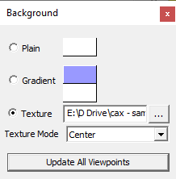
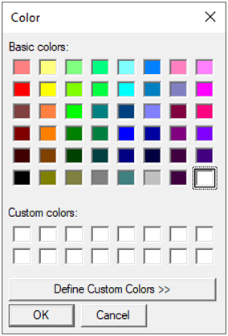
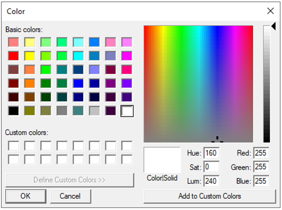
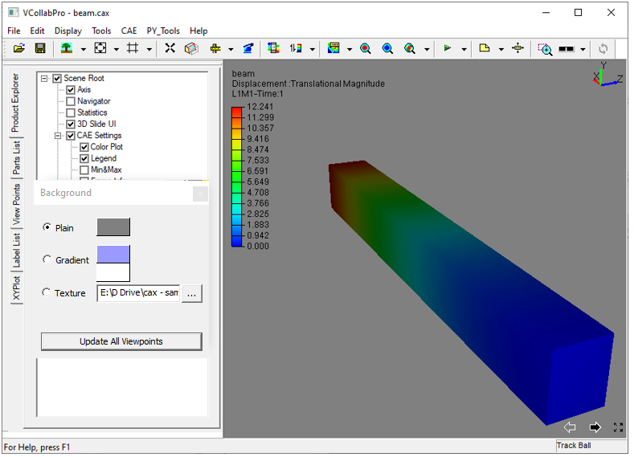
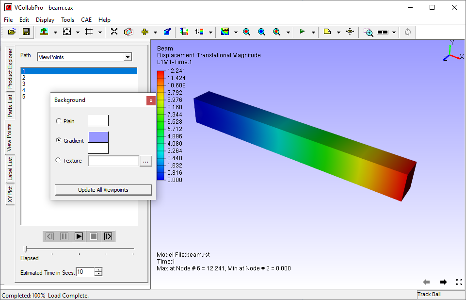
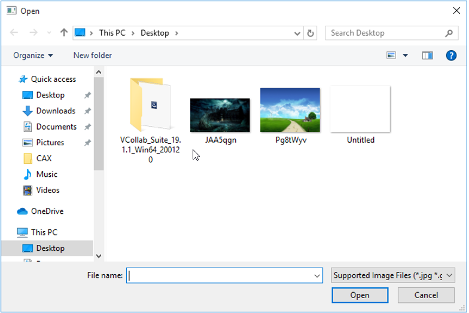
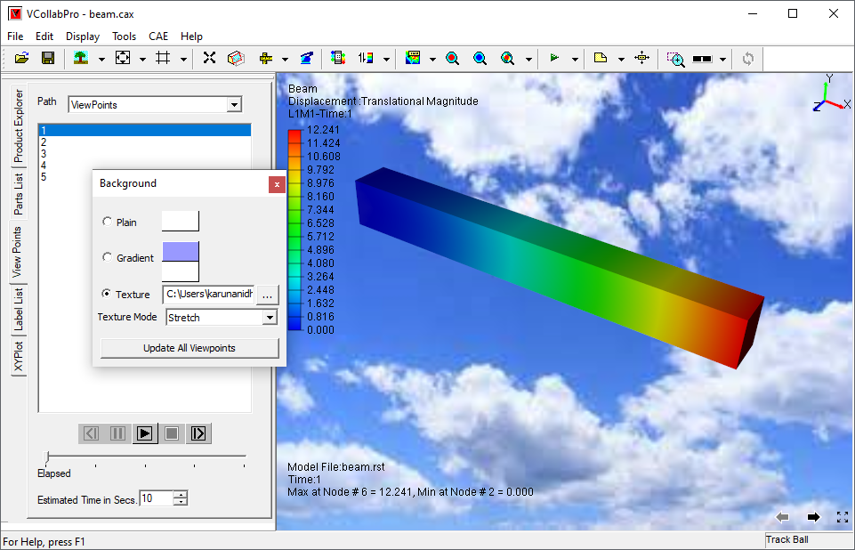

Background Color
This Command allows users to modify background color as shown below.
Background panel

| Plain | Sets a plain color |
| Gradient | Sets a gradient texture between two colors. |
| Texture | Sets an image as background. |
| Texture Mode | Allows user to change the mode into center, stretch, tile and fitView. |
| Update All Viewpoints | This option updates all the viewpoints with selected background mode. It prompts and warns the user that once set, it cannot be reverted. |
Steps toset plain background
Click Edit | Background which opens up background dialog
Ensure that option Plain is checked.
Click on the default background color displayed in the dialog box which opens up a color picker dialog box as shown below.

Choose any basic color displayed. Click OK.
To select more colours, click Define Custom Colors >> in the Color dialog box

Define any color.
Click OK and view the new background as below.

Steps to set gradient background
Click Edit | Background which opens up background dialog box
Check the Gradient option in the background dialog box.
Choose two colors
View the change in viewer as below.

Steps to set a texture image background
Click Texture option.
Click right most file browser button.
It pops up file browser dialog.
Select an image file and click Open..

Texture Mode' option decides whether the image should be centered or stretched or tiled or fit to view. 'Center' option is the default.
User can select any of these options Center, Stretch, Tile and *Fit View".
The applied texture background is shown as below.
